Show Code
pacman::p_load(jsonlite, readxl, fuzzyjoin, igraph, tidygraph, tidytext, ggraph, ggradar, fmsb, patchwork, GGally, colorspace,
visNetwork, lubridate, clock,
tidyverse, magrittr, graphlayouts)This take-home exercise is based on VAST Challenge 2023’s Mini-Challenge 2.
The following text is lifted from the Challenge webpage. Emphases are my own.
The country of Oceanus has sought FishEye International’s help in identifying companies possibly engaged in illegal, unreported, and unregulated (IUU) fishing. As part of the collaboration, FishEye’s analysts received import/export data for Oceanus’ marine and fishing industries. However, Oceanus has informed FishEye that the data is incomplete. To facilitate their analysis, FishEye transformed the trade data into a knowledge graph. Using this knowledge graph, they hope to understand business relationships, including finding links that will help them stop IUU fishing and protect marine species that are affected by it. FishEye analysts found that node-link diagrams gave them a good high-level overview of the knowledge graph. However, they are now looking for visualizations that provide more detail about patterns for entities in the knowledge graph. There are two main parts to this analysis.
First, FishEye knows from past experience that companies caught fishing illegally will shut down but will then often start up again under a different name. FishEye wants your help to visualize temporal patterns so they can compare the activities of companies over time to determine if the companies have returned to their nefarious acts.
Second, FishEye has been using several tools, including artificial intelligence, to reason on the knowledge graph and suggest links that could extend the dataset. They have supplied 12 groups of link suggestions and need your help evaluating these groups to identify which tools are most reliable for completing the graph. FishEye is especially interested in identifying new temporal patterns or anomalies that are only present when new links are added.
Using visual analytics, can you help FishEye identify companies that may be engaged in illegal fishing?
Using appropriate static and interactive statistical graphics methods, help FishEye identify companies that may be engaged in illegal fishing, by answering one of the following four questions listed on the Mini-Challenge 2 webpage:
Use visual analytics to identify temporal patterns for individual entities and between entities in the knowledge graph FishEye created from trade records. Categorize the types of business relationship patterns you find.
Evaluate the sets of predicted knowledge graph links FishEye has provided using visual analytics. Which sets are most reliable for completing the graph?
Illustrate how your visual analytics approach can be used to identify new patterns and/or anomalies that are present in the knowledge graph after you have added the links you deemed reliable in question 2.
Identify companies that fit a pattern of illegal fishing. Use visualizations to support your conclusions and your confidence in them.
I will be attempting the first question:
Use visual analytics to identify temporal patterns for individual entities and between entities in the knowledge graph FishEye created from trade records. Categorize the types of business relationship patterns you find.
pacman::p_load(jsonlite, readxl, fuzzyjoin, igraph, tidygraph, tidytext, ggraph, ggradar, fmsb, patchwork, GGally, colorspace,
visNetwork, lubridate, clock,
tidyverse, magrittr, graphlayouts)According to the provided data dictionary, the main graph has 34,552 nodes and 5,464,092 directed edges (note: file size ~1.55GB). Each edge represents a shipment from a shipper to a receiver.
| Attribute | Data Type (assumed) | Description |
|---|---|---|
id |
char | Name of the company that originated (or received) the shipment |
shpcountry |
char | Country the company most often associated with when shipping |
rcvcountry |
char | Country the company most often associated with when receiving |
dataset |
char | Always ‘MC2’ |
| Attribute | Data Type (assumed) | Description |
|---|---|---|
arrivaldate |
date | Date the shipment arrived at port in YYYY-MM-DD format |
hscode |
char | Harmonized System code for the shipment. Can be joined with the hscodes table to get additional details |
valueofgoods_omu |
integer | Customs-declared value of the total shipment, in Oceanus Monetary Units OMU |
volumeteu |
integer | The volume of the shipment in ‘Twenty-foot equivalent units’, roughly how many 20-foot standard containers would be required. Actual number of containers may have been different as there are 20ft and 40ft standard containers and tankers that do not use containers) |
weightkg |
integer | The weight of the shipment in kilograms (if known) |
dataset |
char | Always ‘MC2’ |
type |
char | Always ‘shipment’ for MC2 |
generated_by |
char | Name of the program that generated the edge. (Only found on ‘bundle’ records) |
Let’s load the main graph JSON data first. (This takes a while due to the size of the file.) Then persist it for faster loading next time.
if (file.exists('data/mc2.rds')) {
MC2 <- read_rds('data/mc2.rds')
} else {
MC2 <- fromJSON('data/mc2_challenge_graph.json')
write_rds(MC2, 'data/mc2.rds')
}Then, we convert the data to a “tidy” format using tidygraph methods, excluding unneeded columns at the same time. (Note: there’s a discrepancy between the data dictionary and data — there’s no type attribute found in the edges data.)
MC2_nodes <- as_tibble(MC2$nodes) %>%
select(!dataset)
MC2_edges <- as_tibble(MC2$links) %>%
select(!dataset)Next, we double-check the columns and correct data types as necessary.
We discover that there is an additional attribute in edges, named valueofgoodsusd, which we will leave in place for now.
The edge attribute arrivaldate has been interpreted as a char type. Let’s change it to a date type:
MC2_edges %<>% mutate(arrivaldate = ymd(arrivaldate))306170, is not even a valid HS code. My suspicion is that there is a missing leading 0, i.e. the correct code is actually 030617 (possibly with subsequent digits). This could have been the result of incorrect data storage/export: the leading 0 may not have been stored, and the export function may have simply extracted the first 6 digits of the data. Using the full list of HS Codes published by Singapore Customs as a reference, let’s examine what HS Codes might be erroneous:# HS Codes provided by Singapore Customs
tradenet_hscodes <- read_xls('data/AllHSCode20230527155627.xls')
code_6d <- tradenet_hscodes %>%
transmute(hscode = substring(`HS Code`,1,6)) %>%
pull(hscode)
MC2_invalid_hscodes <- MC2_edges %>%
select(hscode) %>%
group_by(hscode) %>%
summarise(cnt = n()) %>%
mutate(validcode = hscode %in% code_6d) %>%
filter(validcode == FALSE) %>%
pull(hscode)Among these, since our use case involves fishing, we would be particularly interested in correcting HS Codes related to fish, seafood, etc. From the World Customs Organization website, these would be codes from Chapter 3 (Fish and crustaceans, molluscs and other aquatic invertebrates), specifically 0301-0309 (erroneously coded as 301xxx to 309xxx in our data). So let’s correct these:
MC2_edges %<>%
mutate(hscode_corrected = if_else(hscode %in% MC2_invalid_hscodes & strtoi(substr(hscode,1,3))>=301 & strtoi(substr(hscode,1,3))<=309,
paste0('0', substr(hscode,1,5)),
hscode)) %>%
select(!hscode) %>%
rename(hscode = hscode_corrected)Let’s check for possible duplicate shipment records. We see there are about 100K duplicate shipment records in the dataset. We can remove them when we create the edges for the graph.
MC2_edges %>%
distinct() %>%
summarise(n())# A tibble: 1 × 1
`n()`
<int>
1 5309087Finally, we create a tidygraph object from the nodes and edges data, using only fishing-related edges (i.e. starting with 03) and their corresponding nodes:
# reorder columns to what tidygraph expects
MC2_edges %<>%
filter(substr(hscode,1,2)=='03') %>%
relocate(source, target) %>%
distinct()
MC2_node_ids <- bind_rows(
MC2_edges %>% select(id=source),
MC2_edges %>% select(id=target)) %>%
distinct()
MC2_nodes %<>%
filter(id %in% pull(MC2_node_ids,id)) %>%
relocate(id)
MC2_graph <- tbl_graph(nodes = MC2_nodes,
edges = MC2_edges,
directed = TRUE)After cutting down our data, we are left with about a quarter of the original number of nodes, and a tenth of the original number of edges:
print(MC2_nodes %>% summary()) id shpcountry rcvcountry
Length:9048 Length:9048 Length:9048
Class :character Class :character Class :character
Mode :character Mode :character Mode :character print(MC2_edges %>% summary()) source target arrivaldate valueofgoods_omu
Length:547725 Length:547725 Min. :2028-01-01 Min. : 5705
Class :character Class :character 1st Qu.:2029-11-29 1st Qu.: 398655
Mode :character Mode :character Median :2031-09-08 Median : 760180
Mean :2031-08-15 Mean : 2118449
3rd Qu.:2033-05-28 3rd Qu.: 1654955
Max. :2034-12-30 Max. :44744530
NA's :547566
volumeteu weightkg valueofgoodsusd hscode
Min. : 0.0000 Min. : 0 Min. : 0 Length:547725
1st Qu.: 0.0000 1st Qu.: 18150 1st Qu.: 75905 Class :character
Median : 0.0000 Median : 20360 Median : 133075 Mode :character
Mean : 0.3802 Mean : 22716 Mean : 164421
3rd Qu.: 0.0000 3rd Qu.: 23015 3rd Qu.: 196102
Max. :1215.0000 Max. :131710670 Max. :111432620
NA's :606 NA's :19914 Let’s do a check on missing values:
colMeans(is.na(MC2_nodes)) id shpcountry rcvcountry
0.0000000 0.3322281 0.1320734 colMeans(is.na(MC2_edges)) source target arrivaldate valueofgoods_omu
0.000000000 0.000000000 0.000000000 0.999709708
volumeteu weightkg valueofgoodsusd hscode
0.001106395 0.000000000 0.036357661 0.000000000 Here, we can see that some attributes have a very high proportion of missing values: shpcountry (33%) and valueofgoods_omu (99.9%). Let’s just bear this in mind for now.
Of the companies, about 30% (2,797) do not have a name, only an ID number:
MC2_nodes %>%
select(id) %>%
distinct() %>%
filter(str_detect(id, regex(r"(-\d+$)")))# A tibble: 2,797 × 1
id
<chr>
1 -1143
2 -6894
3 -12516
4 -1515
5 -193
6 -54
7 -21759
8 -214
9 -987
10 -754
# ℹ 2,787 more rowsLet’s see which countries appear most frequently ship to, and receive shipments from, Oceanus. First, count the countries:
MC2_nodes_shpToOceanus <- MC2_nodes %>%
filter(shpcountry!='Oceanus' & rcvcountry=='Oceanus') %>%
group_by(shpcountry) %>%
filter(!is.na(shpcountry)) %>%
summarise(count = n())
MC2_nodes_rcvFrOceanus <- MC2_nodes %>%
filter(shpcountry=='Oceanus' & rcvcountry!='Oceanus') %>%
group_by(rcvcountry) %>%
filter(!is.na(rcvcountry)) %>%
summarise(count = n())
# unused for now
MC2_nodes_gathered <- MC2_nodes %>%
filter(shpcountry=='Oceanus' | rcvcountry=='Oceanus') %>%
gather("shprcvcountry", "country", -id, na.rm = TRUE) %>%
group_by(country, shprcvcountry) %>%
filter(country!='Oceanus') %>%
summarise(count=n())
# spread(shprcvcountry, count, fill = 0)Then, plot the countries:
p1 <- ggplot(slice_max(MC2_nodes_shpToOceanus, order_by = count, n=20),
aes(y=fct_reorder(shpcountry, count),
x=count)) +
geom_col() +
scale_x_continuous(name = 'No. of Companies', position='top', limits=c(0,1700), expand=c(0,0)) +
scale_y_discrete(name = 'Country') +
theme_minimal() +
theme(axis.ticks.y=element_blank()) +
labs(title = "Top 20 countries most often exporting to Oceanus",
)
p2 <- ggplot(slice_max(MC2_nodes_rcvFrOceanus, order_by = count, n=20, with_ties = FALSE),
aes(y=fct_reorder(rcvcountry, count),
x=count)) +
geom_col() +
scale_x_continuous(name = 'No. of Companies', position='top', limits=c(0,17), expand=c(0,0)) +
scale_y_discrete(name = 'Country') +
theme_minimal() +
theme(axis.ticks.y=element_blank()) +
labs(title = "Top 20 countries most often importing from Oceanus",
)
p1 + p2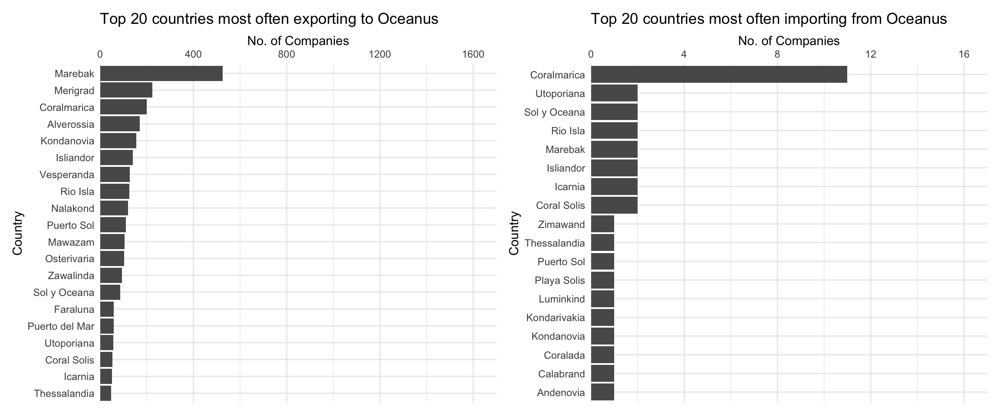
From the above graph, we can see that for companies that have Oceanus as their most common receiving country, the most common shipping country is Marebak. On the other hand, for companies that have Oceanus as their most common shipping country, the most common receiving country is Coralmarica. Note the dramatically different x-axis scales: far more most commonly companies ship to Oceanus than receive from Oceanus.
ggplot(MC2_edges %>%
group_by(arrivalmonthyear=floor_date(arrivaldate, unit ='month')) %>%
summarise(count = n(),
totalvalue_omu = sum(valueofgoods_omu, na.rm = TRUE),
totalvalue_usd = sum(valueofgoodsusd, na.rm = TRUE)),
aes(x=arrivalmonthyear)) +
scale_x_date(name = 'Arrival', date_breaks = 'year', date_minor_breaks = 'month', date_labels = '%Y') +
scale_y_continuous(name = 'No. of Shipments', labels = scales::comma) +
geom_line(aes(y=count)) +
# geom_line(aes(y=totalvalue_omu), color='red') +
# geom_line(aes(y=totalvalue_usd), color='blue') +
labs(title = "Total number of shipments over time")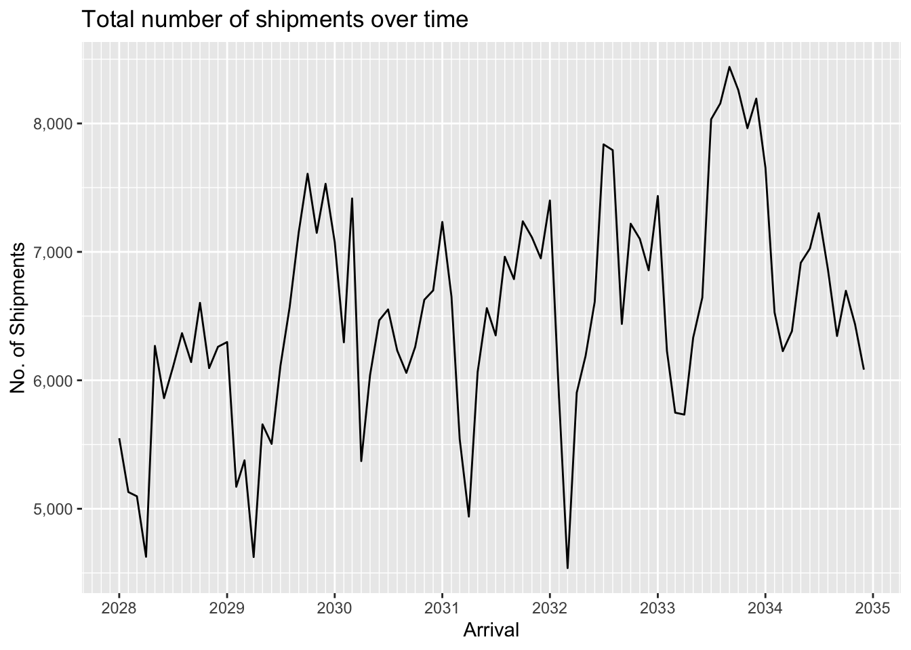
We can see that data for the value of shipments in OMU is only available for a short period in 2034-2035. In contrast value of shipments in USD is available throughout the period, and displays seasonality as well as an overall upward trend. The seasonality is probably to be expected since fishing is seasonally affected.
ggplot(MC2_edges %>%
group_by(arrivalmonthyear=floor_date(arrivaldate, unit ='month')) %>%
summarise(count = n(),
totalvalue_omu = sum(valueofgoods_omu, na.rm = TRUE),
totalvalue_usd = sum(valueofgoodsusd, na.rm = TRUE)) %>%
pivot_longer(c(totalvalue_omu, totalvalue_usd), names_to = "currency", values_to = "valueofgoods") %>%
mutate(valueofgoods = na_if(valueofgoods, 0)),
aes(x=arrivalmonthyear,
color=currency)) +
scale_x_date(name = 'Arrival', date_breaks = 'year', date_minor_breaks = 'month', date_labels = '%Y') +
scale_y_sqrt(name = 'Value', labels = scales::label_comma(suffix = "M", scale=1e-6)) +
geom_line(aes(y=valueofgoods)) +
scale_color_discrete(name = 'Currency', labels = c('OMU', 'USD')) +
# geom_line(aes(y=count)) +
# geom_line(aes(y=totalvalue_omu), color='red') +
# geom_line(aes(y=totalvalue_usd), color='blue') +
labs(title = "Total value of shipments over time",
subtitle = "Note: value axis uses a square-root scale.")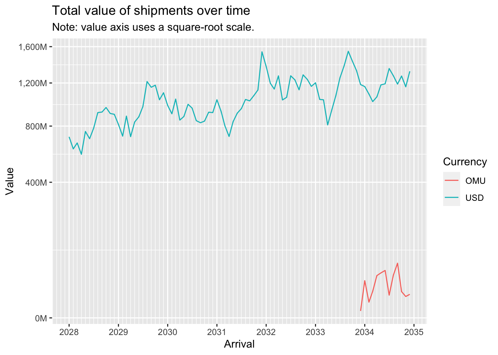
A log-log plot of shipment value (in USD) against shipment weight (in kg) shows an almost straight line, indicating a power relationship.
ggplot(MC2_edges %>% drop_na(valueofgoodsusd, weightkg) %>% filter(!valueofgoodsusd==0 & !weightkg==0),
aes(x=weightkg,
y=valueofgoodsusd)) +
geom_point(alpha=0.3) +
scale_y_log10() +
scale_x_log10()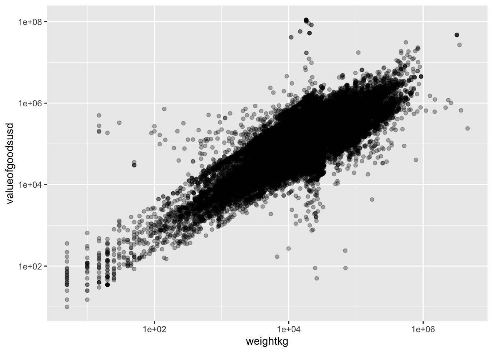
Now let’s aggregate the edges (shipments) to reduce the number of edges to work with to a more manageable number:
MC2_edges_agg <- MC2_edges %>%
group_by(source,target) %>%
summarise(shipment_count = n(),
arrivaldate_earliest = min(arrivaldate),
arrivaldate_latest = max(arrivaldate))
print(MC2_edges_agg %>% summary()) source target shipment_count arrivaldate_earliest
Length:35895 Length:35895 Min. : 1.00 Min. :2028-01-01
Class :character Class :character 1st Qu.: 1.00 1st Qu.:2028-12-22
Mode :character Mode :character Median : 2.00 Median :2030-07-31
Mean : 15.26 Mean :2030-11-21
3rd Qu.: 8.00 3rd Qu.:2032-08-27
Max. :10876.00 Max. :2034-12-29
arrivaldate_latest
Min. :2028-01-01
1st Qu.:2030-01-09
Median :2032-01-09
Mean :2031-12-07
3rd Qu.:2033-12-17
Max. :2034-12-30 We still have close to 36,000 edges after aggregation. Let’s examine the distribution of shipment counts:
MC2_edges_agg %>%
ggplot(aes(x=shipment_count)) +
geom_histogram(binwidth=20)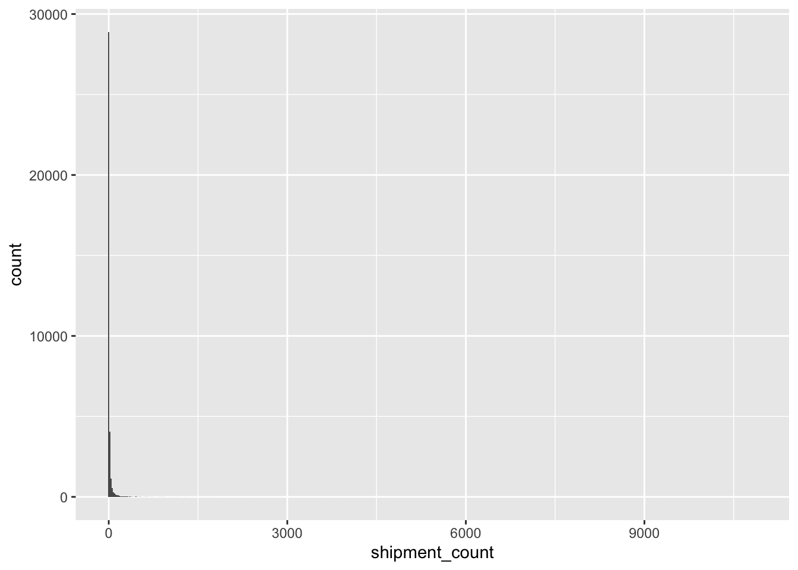
Clearly, the vast majority of edges have very low shipment counts. Let’s eliminate these low-count edges and focus our attention on more ‘active’ relationships:
MC2_edges_agg %<>%
filter(shipment_count > 20)
print(MC2_edges_agg %>% summary()) source target shipment_count arrivaldate_earliest
Length:4157 Length:4157 Min. : 21.0 Min. :2028-01-01
Class :character Class :character 1st Qu.: 29.0 1st Qu.:2028-02-27
Mode :character Mode :character Median : 44.0 Median :2029-01-01
Mean : 101.3 Mean :2029-08-23
3rd Qu.: 88.0 3rd Qu.:2030-10-11
Max. :10876.0 Max. :2034-11-30
arrivaldate_latest
Min. :2028-02-24
1st Qu.:2032-04-18
Median :2034-04-29
Mean :2033-06-21
3rd Qu.:2034-11-25
Max. :2034-12-30 Now we are left with a much more manageable number of edges, a bit over 4,000.
Let’s re-extract the nodes and build our new graph:
MC2_nodes_extracted <- MC2_nodes %>%
filter(id %in% MC2_edges_agg$source | id %in% MC2_edges_agg$target)
MC2_graph_agg <- tbl_graph(nodes = MC2_nodes_extracted,
edges = MC2_edges_agg,
directed = TRUE)A first visual look at the resulting graph:
MC2_graph_agg %>%
ggraph(layout='fr') +
geom_edge_link(aes(width=shipment_count),
alpha=0.2) +
scale_edge_width(range = c(0.5,5)) +
geom_node_point(size=1) +
theme_graph()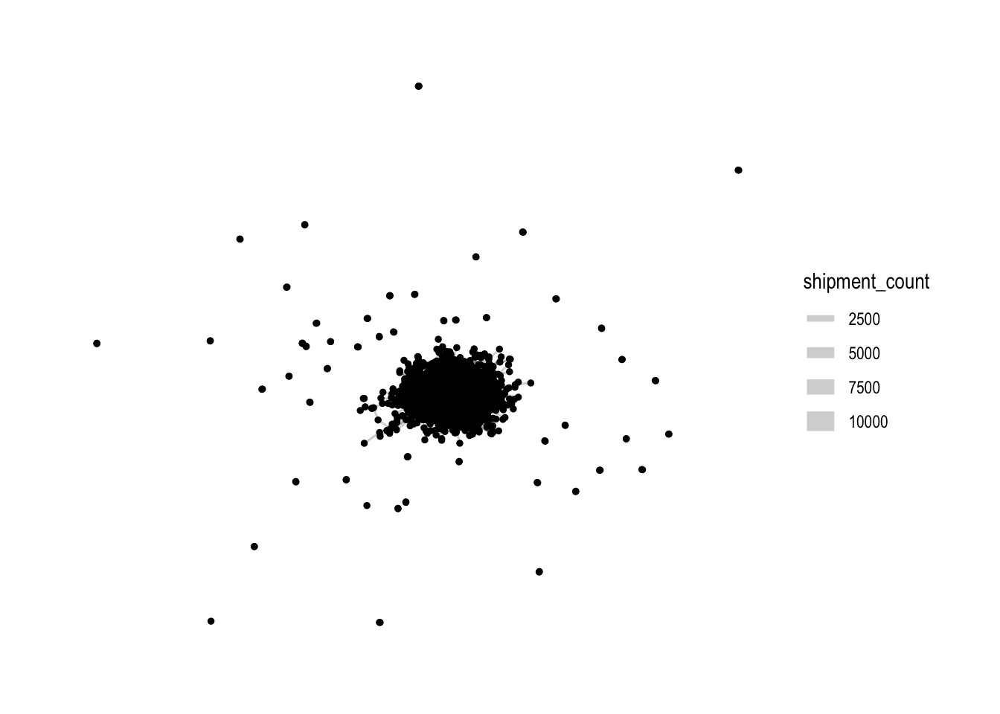
Rightaway, we can see that there is one large connected component in the centre, and many other smaller disconnected components (each of 2-3 nodes). To focus our attention on the largest component, let’s extract just that:
MC2_graph_agg %<>%
activate(nodes) %>%
mutate(group = group_components()) %>%
filter(group==1)Let’s see how the graph looks like now:
MC2_graph_agg %>%
ggraph(layout='stress') +
geom_edge_link(aes(width=shipment_count),
alpha=0.2) +
scale_edge_width(range = c(0.5,5)) +
geom_node_point(size=1, color='lightblue') +
theme_graph()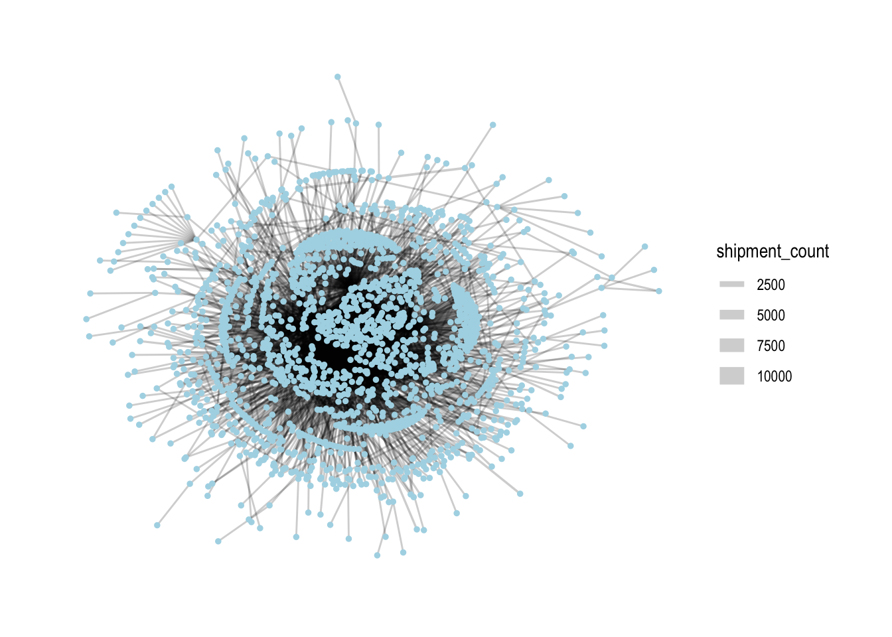
From here on out, we’ll only use this subset of nodes and edges for analysis.
In networks, it’s common to look at the centrality of nodes as it gives a sense of which nodes are ‘important’ in a network. There are different measures of centrality. Let’s generate centrality statistics for the following:
Degree: both in-degree and out-degree, with both unweighted and weighted variants (reflects number of counterparties and direction/total volume of shipments)
Betweenness (reflects the importance that nodes play as ‘bridges’ between different parts of the network)
Eigenvector (reflects importance, based on whether other important nodes connect to it)
We also calculate the ratio of out-degree to in-degree: this will help us characterise whether a company is more of a sender or receiver.
MC2_graph_agg %<>%
activate(nodes) %>%
mutate(deg_o = centrality_degree(mode='out'),
wdeg_o = centrality_degree(weights=shipment_count, mode='out'),
deg_i = centrality_degree(mode='in'),
wdeg_i = centrality_degree(weights=shipment_count, mode='in'),
deg_oi_ratio = (deg_o+1)/(deg_i+1),
wdeg_oi_ratio = (wdeg_o+1)/(wdeg_i+1),
betweenness = centrality_betweenness(normalized = TRUE),
eigen = centrality_eigen(weights=shipment_count))
centralities <- MC2_graph_agg %>%
activate(nodes) %>%
as_tibble()top_centralities <- MC2_graph_agg %>%
activate(nodes) %>%
as_tibble() %>%
pivot_longer(c(deg_o, wdeg_o, deg_i, wdeg_i, betweenness, eigen), names_to='centrality_type', values_to='centrality_value') %>%
group_by(centrality_type) %>%
top_n(10, centrality_value) %>%
ungroup() %>%
mutate(r = reorder_within(id, centrality_value, centrality_type))
ggplot(top_centralities, aes(x=fct_reorder(r, centrality_value), y=centrality_value, fill=id)) +
geom_col(show.legend = FALSE) +
facet_wrap(~centrality_type, scales = 'free') +
scale_x_reordered(name = "Companies") +
scale_y_continuous(name = 'Centrality Value') +
coord_flip() +
labs(title = "Top 10 Companies by various centrality measures")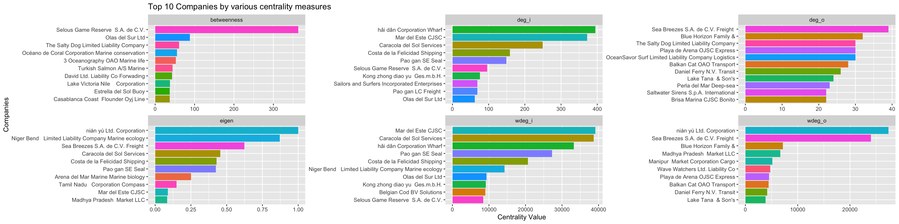
As we would expect, these companies with high centrality scores are generally located in the centre of the network when we draw the network graph using a stress layout:
MC2_graph_agg %>%
# activate(edges) %>%
# filter(shipment_count >200) %>%
activate(nodes) %>%
mutate(top10_centrality = ifelse(id %in% top_centralities$id, 'Yes', 'No')) %>%
# mutate(component = group_components()) %>%
filter(group_components()==1) %>%
ggraph(layout='stress') +
geom_edge_link(aes(width=shipment_count),
alpha=0.2) +
scale_edge_width(name = 'No. of shipments', range = c(0.5,5)) +
geom_node_point(aes(fill=log10(deg_oi_ratio), color=top10_centrality, size=top10_centrality), shape=21, stroke=1) +
# scale_size(range = c(1,5)) +
# scale_color_discrete(name = 'Top 10 Centrality', direction=-1) +
scale_fill_continuous_diverging(palette='Blue-Red 3', guide='none', l1=30, l2=100, p1=0.9, p2=1.2) +
scale_size_manual(name = 'Top 10 Centrality', values=c('Yes'=5,'No'=2)) +
scale_color_manual(name = 'Top 10 Centrality', values=c('transparent', 'black')) +
theme_graph() +
labs(title = "Graph of shipments",
subtitle = "Colour indicates whether company mostly sends (red) or receives (blue).\nHigh centrality nodes are indicated by larger size and black border.")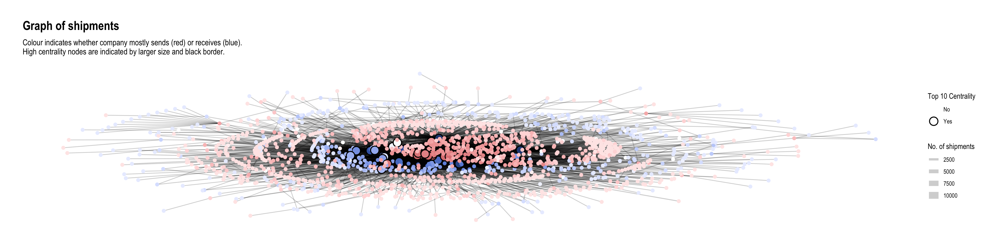
It was mentioned in the challenge that “companies caught fishing illegally will shut down but will then often start up again under a different name”. Here, I tried to plot the operating timelines of the companies to see if such temporal patterns can be detected. I made an assumption that in such situations, the old and new companies would be similar in scale (shipment values or volumes). Hence I put time on the x-axis and ‘operation scale’ (average) on the y-axis so that companies of similar scale would appear closer together. To avoid clutter, I only plotted the start and end months of operations, each with a different shape. Hence, proximity of two different shapes at roughly the same vertical height could indicate the described pattern.
source_monthly_agg <- MC2_edges %>%
group_by(source,
arrivalmonthyear=floor_date(arrivaldate, unit ='month')) %>%
summarise(count = n(),
totalvalue_omu = sum(valueofgoods_omu, na.rm = TRUE),
totalvalue_usd = sum(valueofgoodsusd, na.rm = TRUE),
totalweight_kg = sum(weightkg, na.rm = TRUE),
avgvalue_omu = mean(valueofgoods_omu, na.rm = TRUE),
avgvalue_usd = mean(valueofgoodsusd, na.rm = TRUE),
avgweight_kg = mean(weightkg, na.rm = TRUE))
source_earliest_latest <- source_monthly_agg %>%
group_by(source) %>%
summarise(arrivalmonthyear_earliest = min(arrivalmonthyear),
arrivalmonthyear_latest = max(arrivalmonthyear)) %>%
pivot_longer(c(arrivalmonthyear_earliest, arrivalmonthyear_latest),
names_to = 'arrivalmonthyear_type',
values_to = 'arrivalmonthyear')
source_agg_earliest_latest <- source_monthly_agg %>%
inner_join(source_earliest_latest,
by = join_by(source, arrivalmonthyear)) source_agg_earliest_latest %>%
filter(avgweight_kg < 20e6) %>%
ggplot(aes(x=arrivalmonthyear,
y=avgweight_kg,
group=source,
color=source)) +
geom_line(alpha=0.1) +
geom_point(aes(shape=arrivalmonthyear_type)) +
# geom_point(data=source_agg_earliest_latest) +
scale_x_date(name = 'Arrival', date_breaks = 'year', date_minor_breaks = 'month', date_labels = '%Y') +
scale_y_continuous(name = 'Average Shipment Weight (kg)', labels = scales::label_comma(suffix = "M", scale=1e-6)) +
scale_color_discrete(guide='none') +
scale_shape_manual(name = 'Event', labels = c('First Shipment', 'Last Shipment'), values = c(1,4)) +
facet_wrap(~ cut_number(avgweight_kg, 6), ncol = 1, scales = 'free')
# theme(legend.position = 'none')Here, I wondered if companies who engage in illegal fishing might be trying to do so on certain days of the week with less shipments to lessen the chance of getting caught. Hence, I decided to examine the number of companies operating shipments by days of the week:
MC2_edges %>%
mutate(weekday = wday(arrivaldate, week_start = 1, label = TRUE)) %>%
mutate(year = year(arrivaldate)) %>%
group_by(weekday) %>%
summarise(shipments = n_distinct(source)) %>%
ggplot(aes(y=weekday,
x=shipments)) +
geom_col() +
scale_y_discrete(name = 'Day of Week') +
scale_x_continuous(name = 'Number of companies') +
labs(title = "Number of companies operating by day of week",
subtitle = "There are overall fewer shipments on 'Wed' and 'Thu' compared to other days")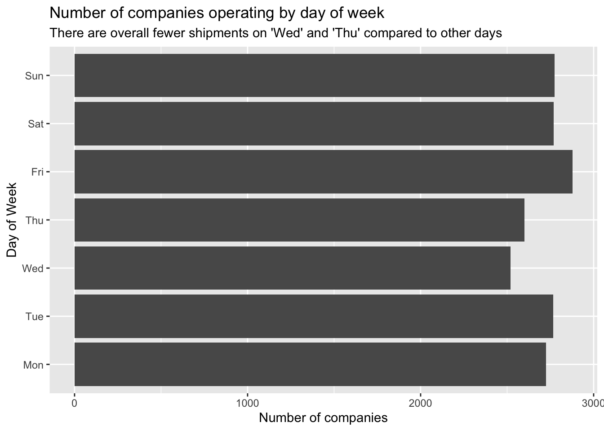
It seems that there are fewer companies operating on ‘Wed’ and ‘Thu’ compared to the other days of the week. (Note that since the dates given in the data are fictitious, it might not really be Wed and Thu; they could well be Sat and Sun, i.e. the weekend.)
Let’s examine the temporal patterns of the high-centrality nodes in greater detail.
shipment_send <- MC2_edges %>%
group_by(source,
arrivalmonthyear=floor_date(arrivaldate, unit ='month')) %>%
summarise(shipment_count = n(),
totalvalue_usd = sum(valueofgoodsusd, na.rm = TRUE),
totalweight_kg = sum(weightkg, na.rm = TRUE)) %>%
mutate(shipment_count_type = 'send') %>%
rename(id = source)
shipment_receive <- MC2_edges %>%
group_by(target,
arrivalmonthyear=floor_date(arrivaldate, unit ='month')) %>%
summarise(shipment_count = n(),
totalvalue_usd = sum(valueofgoodsusd, na.rm = TRUE),
totalweight_kg = sum(weightkg, na.rm = TRUE)) %>%
mutate(shipment_count_type = 'receive') %>%
rename(id = target)
# test3 <- test %>%
# full_join(test2,
# by = join_by(source==target, arrivalmonthyear==arrivalmonthyear))
shipment_all <- union(shipment_send, shipment_receive)We can see something interesting with the nodes having the top 5 betweenness centrality. They all consistently send and receive shipments throughout the months, so may be playing roles as forwarders or transshipment providers. The differences between number of shipments sent and received are fairly big. Two of them receive a lot more shipments than they send, while the third is the opposite.
top_ids <- top_centralities %>%
filter(centrality_type=='betweenness') %>%
top_n(3, centrality_value) %>%
pull(id)
shipment_all %>%
filter(id %in% top_ids) %>%
ggplot(aes(x=arrivalmonthyear,
y=shipment_count)) +
geom_line(aes(colour=id, linetype=shipment_count_type)) +
scale_x_date(name = 'Arrival', date_breaks = 'year', date_minor_breaks = 'month', date_labels = '%Y') +
scale_colour_discrete() +
labs(title = "Shipments sent and received over time by top 3 companies with highest betweenness") +
theme_minimal()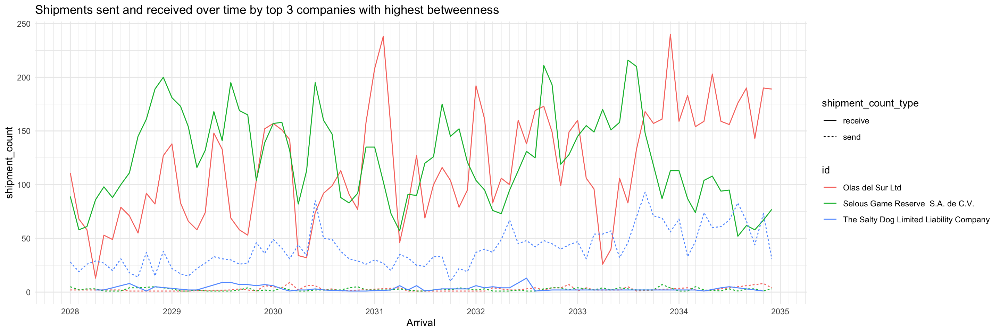
In contrast with the high betweenness nodes, the top 3 companies with highest in-degree almost only exclusively receive shipments. This profile suggests they may be wholesalers or purchasers.
top_ids <- top_centralities %>%
filter(centrality_type=='wdeg_i') %>%
top_n(3, centrality_value) %>%
pull(id)
shipment_all %>%
filter(id %in% top_ids) %>%
ggplot(aes(x=arrivalmonthyear,
y=shipment_count)) +
geom_line(aes(colour=id, linetype=shipment_count_type)) +
scale_x_date(name = 'Arrival', date_breaks = 'year', date_minor_breaks = 'month', date_labels = '%Y') +
scale_colour_discrete() +
labs(title = "Shipments sent and received over time for top 3 companies with highest in-degree") +
theme_minimal()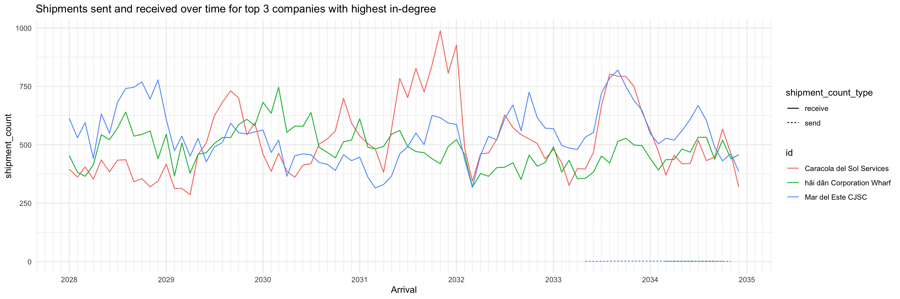
As expected, the opposite is observed from the top 3 companies with highest out-degree: they almost only exclusively send shipments (except for one, which had a very low volume of receiving shipments during 2028-2033). This profile suggests they may be the actual fishing companies.
top_ids <- top_centralities %>%
filter(centrality_type=='wdeg_o') %>%
top_n(3, centrality_value) %>%
pull(id)
shipment_all %>%
filter(id %in% top_ids) %>%
ggplot(aes(x=arrivalmonthyear,
y=shipment_count)) +
geom_line(aes(colour=id, linetype=shipment_count_type)) +
scale_x_date(name = 'Arrival', date_breaks = 'year', date_minor_breaks = 'month', date_labels = '%Y') +
scale_colour_discrete() +
labs(title = "Shipments sent and received over time for top 3 companies with highest out-degree") +
theme_minimal()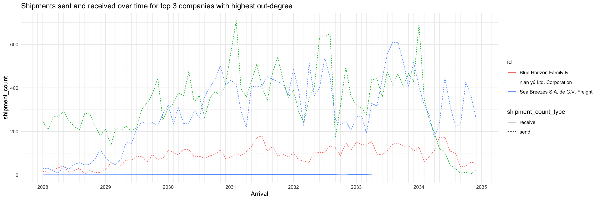
Of the top 3 companies with highest eigenvector centrality, two are the same as top 3 with highest out-degree. No immediate inferences can be drawn, more study is required.
top_ids <- top_centralities %>%
filter(centrality_type=='eigen') %>%
top_n(3, centrality_value) %>%
pull(id)
shipment_all %>%
filter(id %in% top_ids) %>%
ggplot(aes(x=arrivalmonthyear,
y=shipment_count)) +
geom_line(aes(colour=id, linetype=shipment_count_type)) +
scale_x_date(name = 'Arrival', date_breaks = 'year', date_minor_breaks = 'month', date_labels = '%Y') +
scale_colour_discrete() +
labs(title = "Shipments sent and received over time for top 3 companies with highest eigenvector centrality") +
theme_minimal()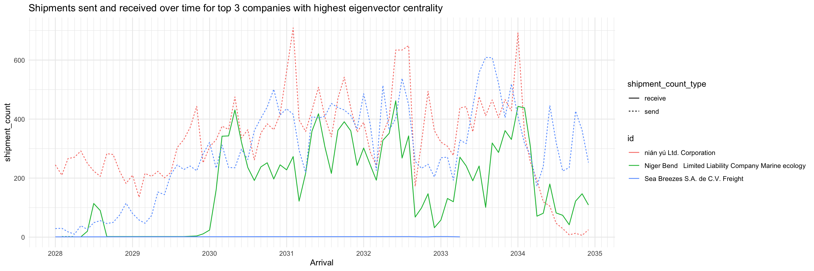
This heatmap shows the number of shipments sent and received by high-centrality nodes (on any measure) broken down by days of the week. It distinctly shows that for about 3/4 of the companies, they primarily send or receive but not both. For the remaining companies though, they send and receive roughly the same number of shipments throughout a week.
top_ids <- top_centralities %>%
pull(id) %>%
unique()
send_weekdays <- MC2_edges %>%
mutate(weekday = wday(arrivaldate, week_start = 1, label = TRUE)) %>%
filter(source %in% top_ids) %>%
count(source, weekday) %>%
arrange(desc(tolower(source)), weekday) %>%
mutate(shipment_type = 'send') %>%
rename(company = source)
receive_weekdays <- MC2_edges %>%
mutate(weekday = wday(arrivaldate, week_start = 1, label = TRUE)) %>%
filter(target %in% top_ids) %>%
count(target, weekday) %>%
arrange(desc(tolower(target)), weekday) %>%
mutate(shipment_type = 'receive') %>%
rename(company = target)
send_receive_weekdays <- union(send_weekdays, receive_weekdays) %>%
mutate(across(shipment_type, as.factor))
ggplot(send_receive_weekdays,
aes(x=weekday,
y=fct_inorder(company),
fill=n)) +
geom_tile(color = "white",
size = 0.1) +
coord_equal() +
scale_x_discrete(position = 'top') +
scale_fill_gradient(name = "# of shipments",
low = "light blue",
high = "dark blue") +
theme(axis.ticks = element_blank(),
panel.grid = element_blank(),
plot.title = element_text(hjust = 0.5),
plot.subtitle = element_text(hjust = 0.5),
legend.title = element_text(size = 8),
legend.text = element_text(size = 6)
) +
labs(title = "Number of Shipments Sent/Received by High Centrality Nodes per Day of Week",
subtitle = "Note: Day of week may not be true value due to use of fictitious dates, but relative order should be correct.",
x = "Day of Week",
y = "Company") +
facet_wrap(~fct_rev(shipment_type))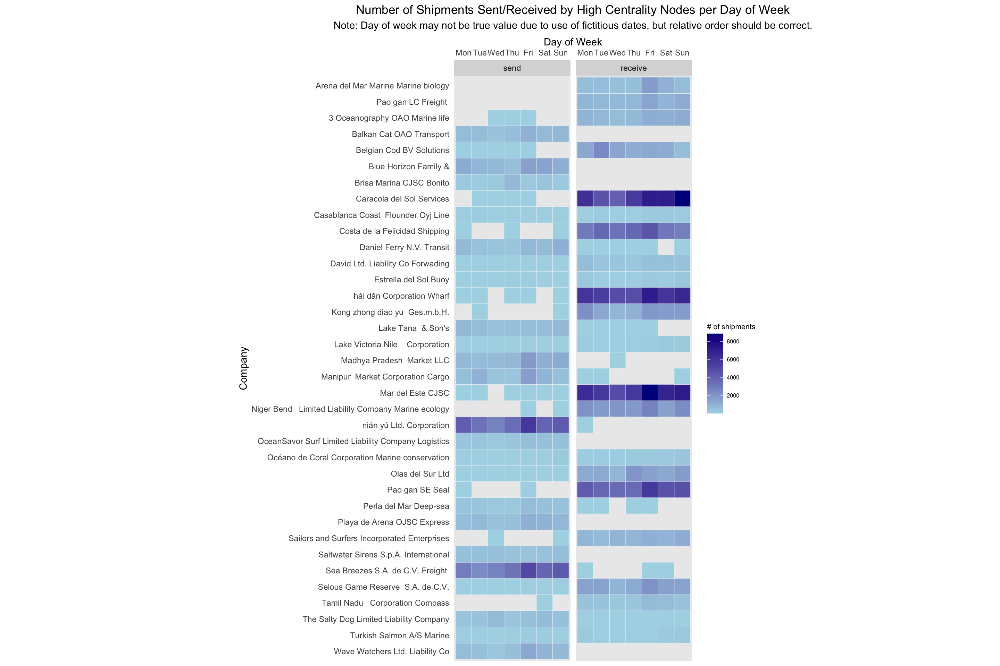
MC2_graph_agg %>%
convert(to_local_neighborhood,
node = which(.N()$id == 'Selous Game Reserve S.A. de C.V.'),
order = 1,
mode = 'all') %>%
activate(nodes) %>%
mutate(color = ifelse(id %in% top_centralities$id, 'high centrality', 'others')) %>%
ggraph(layout='fr') +
geom_edge_link(aes(width=shipment_count, alpha=..index..),
) +
scale_edge_width(range = c(0.5,5)) +
scale_edge_alpha('Edge direction', guide = 'edge_direction') +
geom_node_point(aes(size=5, color=color)) +
scale_size(range = c(0.5,5)) +
theme_graph()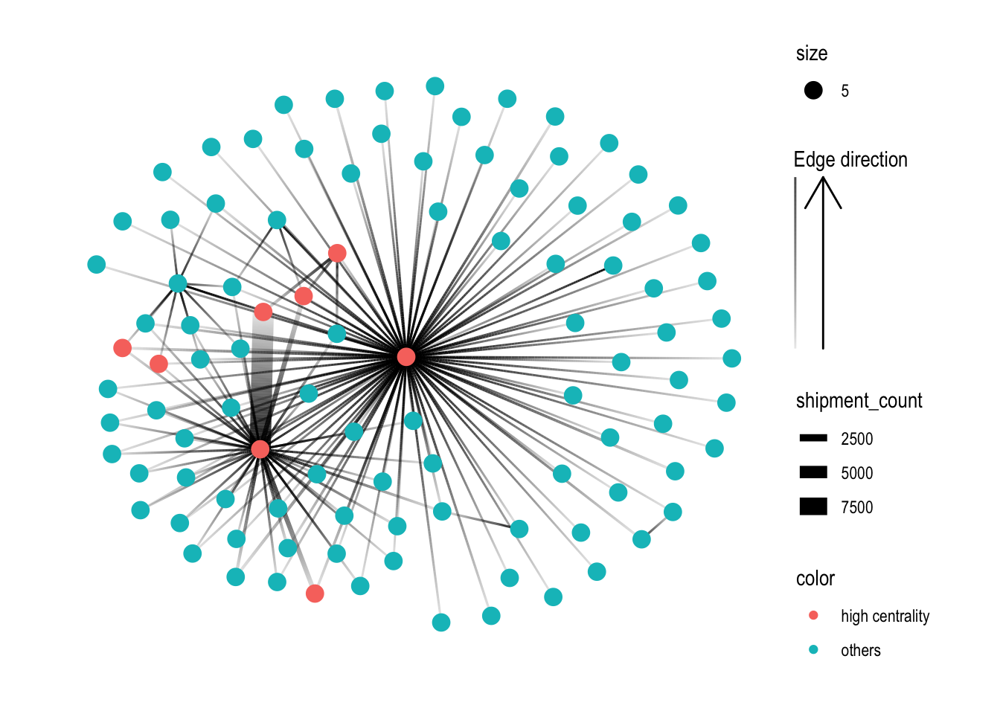
MC2_graph_agg %>%
activate(nodes) %>%
filter(id %in% top_centralities$id) %>%
ggraph(layout='stress') +
geom_edge_link(aes(width=shipment_count),
alpha=0.2) +
scale_edge_width(range = c(0.5,5)) +
geom_node_point(size=1, color='lightblue') +
theme_graph()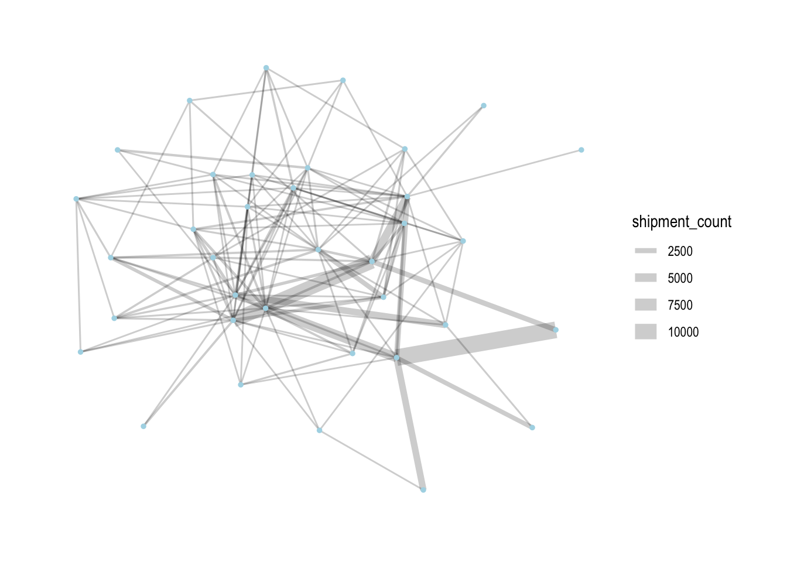